{kind=link}
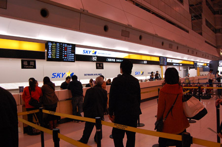
先日の旅行のことをすこし。 メインは直島観光だったのだけど、こちらの記録は別途また「直島観光2010」としてまとめる予定として、その他のことをすこし。といっても、旅のほとんどは船に乗っていて、どっかに行ったとか何かを見たー…とゆーよーなカラフルな行程とはほど遠い地味な記録。 まーこーゆー旅もアリよ。とゆーことで。 なにはともあれスカイマークエアで羽田→神戸空港。 そもそも、この旅行企画のきっかけはコレ。東京→神戸のスカイマーク利用で、高松までのジャンボフェリーが無料になるとゆーもの。 ちなみにフェリーは往復2,990円。もともと安いが、無料にはかなわん。たまらず企画！決行！{kind=link}
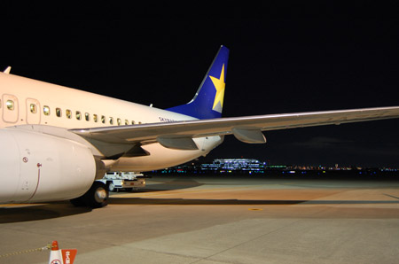
はじめての神戸空港。 関西ってやたらと空港があるよね。{kind=link}
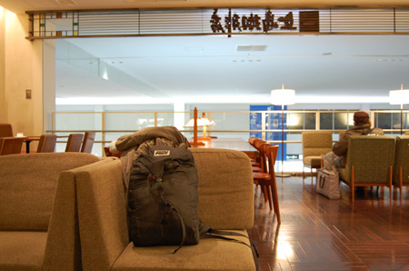
おなじみアメックスの空港サービス。 神戸空港は上島珈琲で500円分。普段飲まない甘ーーいの頼んでみました。{kind=link}
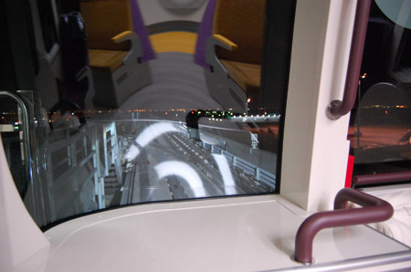
ポートライナーは最前列。 なんでみんな一番前に乗らないのかしら？最強最高席！{kind=link}
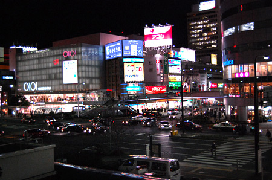
神戸の街到着。フェリーの時間までぷらぷら。 とりあえず中途半端なシャネルマークで有名（？）な神戸市役所の展望フロアに行ってみる。{kind=link}
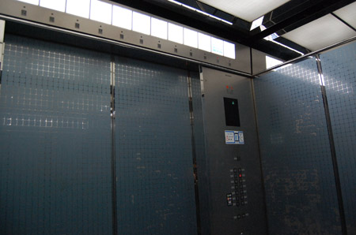
警備員が怖いよー！{kind=link}
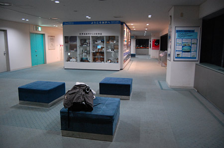
展望フロア。 たまにサササッ…とカップルがやってきて、私がいるのを見るとまたサササッと消えていく… ごめん二人っきりになりたいんだよネー！{kind=link}
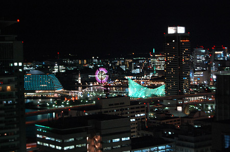
南方面{kind=link}
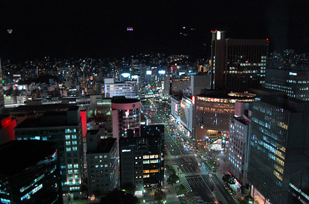
北方面 神戸市章やら錨のマークやらのイルミネーションが夜の空に浮かんでいて 「わわわ！なんか浮かんでる！神戸すげーすげー！」って思ったら、 山の中腹にイルミネーションを付けているとゆーことが判明。 最初は山があるなんて思っていなかったから、ホントーに驚いた。 いや、びっくりするのヨー！ホント！{kind=link}
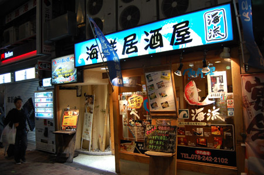
ぶらぶらっと適当なとこ入ってビールのんだりしてみる。{kind=link}
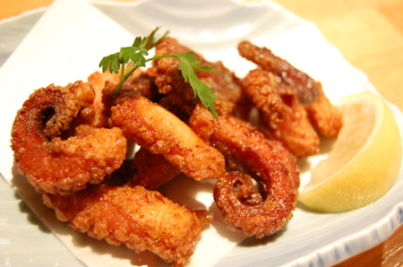
タコ唐揚げー。んま。ビールごくごきゅ{kind=link}
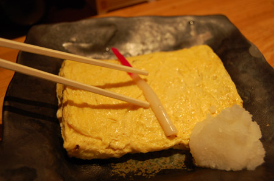
たまごやき。でかっ！んま！日本酒ごくごきゅ{kind=link}
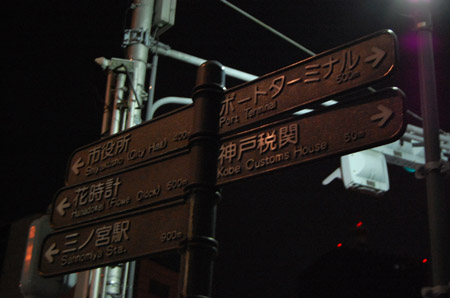
適当に酔っぱらったトコで、港に行く。{kind=link}
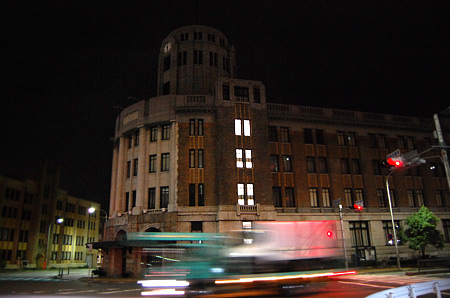
夜の神戸税関（たぶん）酔っぱらっていると寒くなくていいなー！ 凍死するロシア人ってこーゆー感じなんだな。{kind=link}
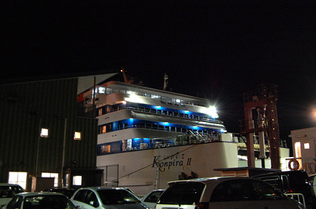
フェリー登場。 その名も「こんぴらⅡ」{kind=link}
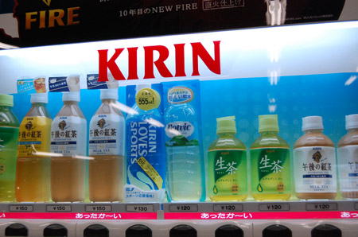
待合いロビーには あったか～い「スポーツドリンク」と、あったか～い「ミネラルウォーター」 ホントに温かいの？ まーどちらもそんなに害はなさそうだけど…買ってみればよかったかなーと今になっては思うけど、その時はごっちゃり重いバックパックを背負っていたからそんな気にもならず…{kind=link}
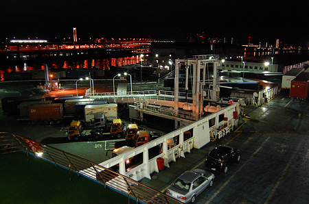
フェリーは深夜0:55出発。 みんな就寝準備をしているので、和室でごろ寝。{kind=link}
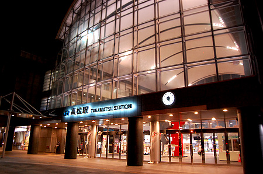
んで、何時に着くのかとゆーと5:00!早いよぅっ！{kind=link}
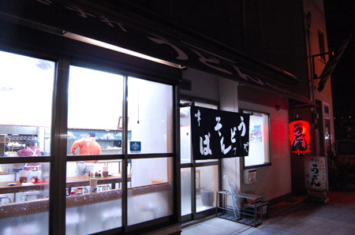
でもまー、高松に着いたことだしうどんでも食べるか… ここは高松駅周辺で唯一早朝から営業の「味庄」{kind=link}
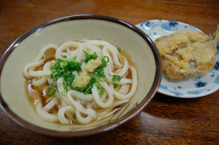
かけ（小）とキス天（でっかい）注文。{kind=link}
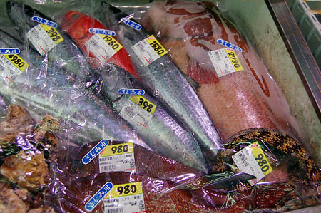
…さて時間は飛んで2日後。 高松駅の横にあるスーパーはすんごい面白いのでオススメです。 これは魚売り場。右下にあるのは「うつぼ」。いつもなんか買ってかえりたくてうずうずしてしまう！ そういえば、この写真、唯一「うつぼ」だけ刺身用じゃないのね。うつぼは刺身にならんのか？{kind=link}
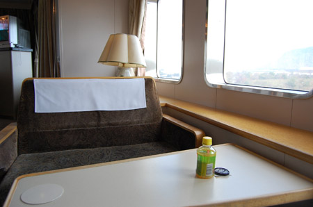
というわけで帰りのジャンボフェリー高松→神戸。 帰りは10:35→14:45なので見晴らしのよい椅子席の角を陣取る。{kind=link}
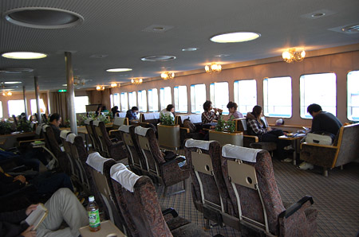
全景はこんな感じ。 明るい。まったり。もったりした雰囲気。{kind=link}
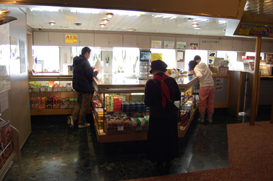
売店。お弁当購入。 ジャンボフェリー廃線の可能性があるらしく、署名活動をおこなってた。{kind=link}
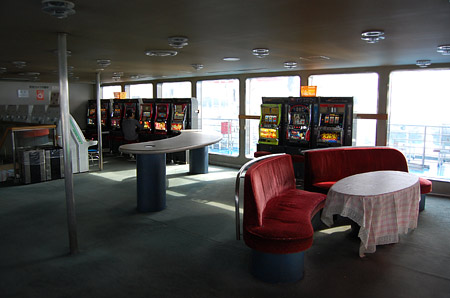
ゲームコーナー かならずこーゆーとこにはスロットに夢中になっているオトナが一人いるなー{kind=link}
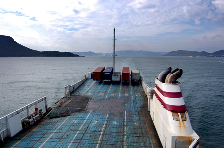
船はすすむ。 コンテナいっぱい積んでいたら壮観だろーなー{kind=link}
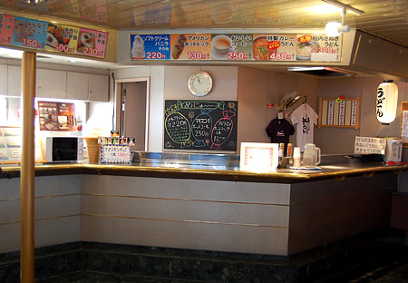
ジャンボフェリーで有名はうどんコーナー。 うどんは客室で食べられません。{kind=link}
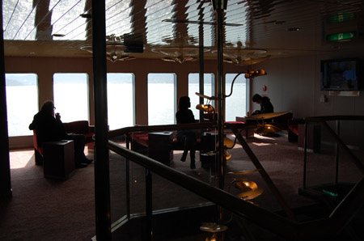
喫煙コーナー{kind=link}
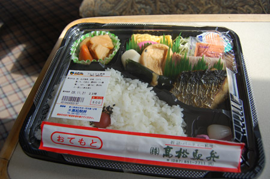
お弁当。結構おいしい。修学旅行の途中でだされた仕出し弁当の味だなー。 普段の町のお弁当にはないオトナ味。旅風味。{kind=link}
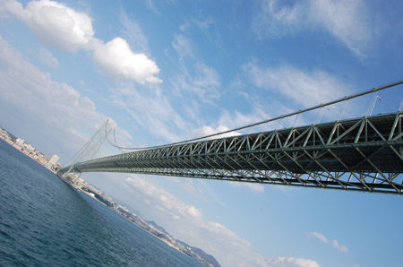
明石海峡大橋をぐぐぐぐっとくぐる。{kind=link}
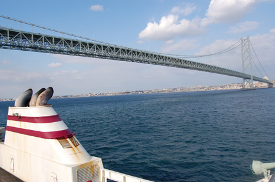
あらためて「ヨー作ったなー」って思う。 そんなこんなで神戸到着→神戸花鳥園に。 神戸に来たなら南京町やら三宮とか北野とか行けばいいのにー！とゆー声が聞こえてくるけど許して！